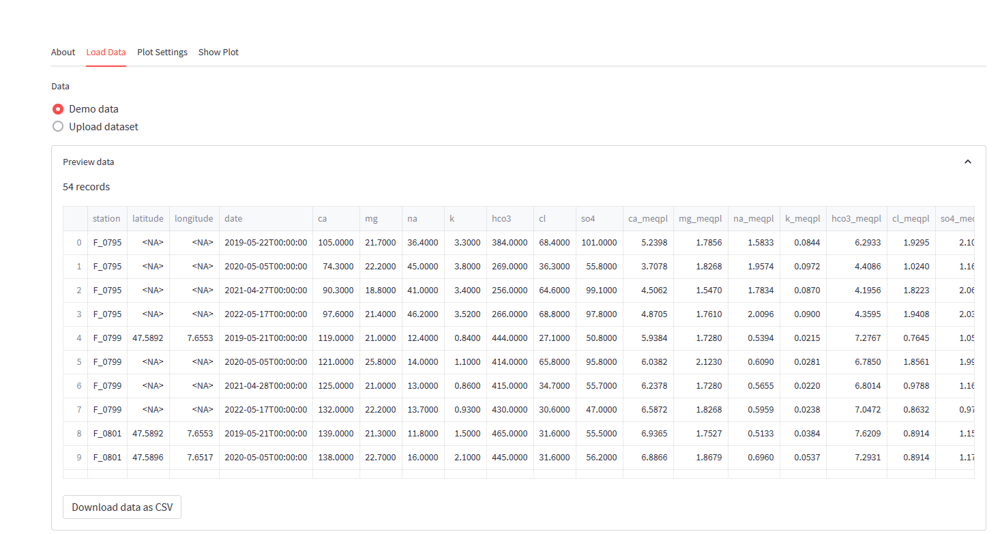
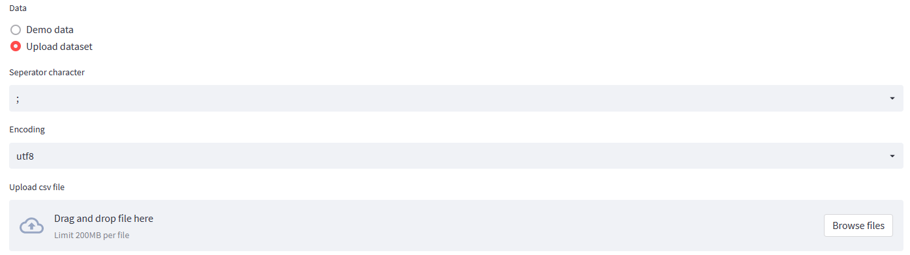
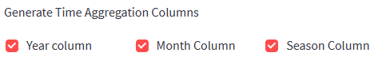

Load Data
This tab includes the import settings By default the demo dataset and its configuration is loaded. If you want to explore the basic features of this application using the demo dataset, no further action should be required in this section.

The Dataradio-button allows to set the datasource to an imported file. Once the Upload dataset option is selected, various import options and an upload fields become available.

| Field | Description |
|---|---|
| Separator character | character separating 2 fields |
| Encoding | file encoding |
| Upload csv file | drag the file from your local disk to this field to upload the file |
The Preview Data section shows the uploaded data. Use the Download data as CSV button below this table to download the file. Typically, this is not useful since the table corresponds to the user's uploaded file. However, downloading the file may be helpful if the user wishes to download the demo dataset so he can reuse the file as a template for formatting data. For the current version, it is essential to use the naming convention for your fields for major ions, as shown below:
| Parameter | Description |
|---|---|
| Ca | Calcium concentration in mg/L |
| Mg | Magnesium concentration in mg/L |
| Na | Sodium concentration in mg/L |
| (K) | Potassium in mg/L is not mandatory, but if present, it will be added to the sodium ternary endpoint in the Piper diagram |
| Cl | Chloride concentration in mg/L |
| SO4 | Sulfate concentration in mg/L |
| HCO3 or Alk | Bicarbonate concentration in mg/L or alternatively alkalinity in mg/L CaCO3 |
| (CO3) | Carbonate concentration in mg/L is not mandatory, but if found, it will be added to the bicarbonate ternary endpoint. |
The Fields section shows all fields found in the uploaded data and the default settings, that the system determines after the import. You can redefine the following columns.
Column name: The column name is the name found in the imported file, it cannot be changed, unless the user updates the column name in the file and uploads it again. Column names must be unique and should not include spaces, brackets, hyphens etc.
Label: Label used in the plots and tooltips. Labels will be more useful in future versions. The Piper plots use fixed labels to label the ternary endpoints.
Digits: Default number of digits for numeric parameters when shown in a tooltip.
Map: Columns may be mapped to system parameters, so the application understands the significance of the data held in this column. Currently, the following system parameters can be mapped: latitude, longitude, sample_date, ca, mg, k, cl, so4, hco3, co3, alk. Note that if you use these as your column names in the uploaded file, the system will automatically detect and map the parameters.
Type: Data type for this column: str, float, int, DateTime. String parameters will be detected as group-by-parameters. Group-by-parameters are included in the GUI and can be used for filtering, for plot lgends and plot grouping.
The Generate time aggregation columns only appear if a parameter is mapped as the sample_date parameter. If this is the case, you may add one or multiple time aggregation columns: Year, Month, Season. These fields can later be used for filtering or as the legend in a Piper plot. The application uses a simplified algorithm where December to February is assigned to Winter, March to May to spring, June to August to summer, and September to November to fall. Note that for determining the season based on the sampling date, you should define the hemisphere of the project area. For the Southern hemisphere, the seasons will be assigned as follows: December to February: summer; March to May: fall, June to August: winter, September to November: fall. Refrain from using this option if your uploaded data already includes the year, month, or season columns.

Note that your data is not stored on the server. You will have to upload and configure your data for each new session.